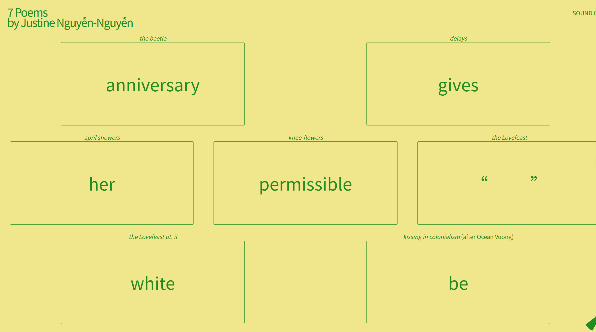
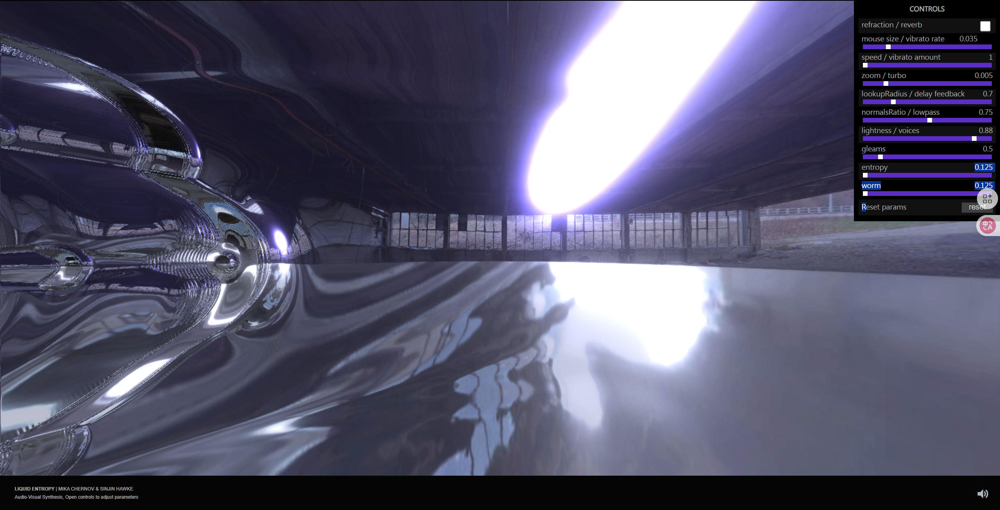

7 Poems UI Analysis
 Visit ExampleThe information design of the "7 Poems" website omits traditional navigational elements and visual decorations. The homepage only presents 7 poem titles (e.g., "The Beetle", "Kissing in Colonialism") in a plain text list, with no categories, tags, or visual elements, allowing users to focus entirely on the poem text itself. The central element is seven poem titles, each accompanied by a green vertical bar above it. The layout visually creates a sense of order, and the interactive entrance to the poem is a green vertical bar above the title, which is clicked to display content related to the poem within the current page.
In "7 Poems", the mapping relationship is the mapping relationship that is extremely direct. The green vertical bar serves as a visual representation of the poem, with no secondary pages and no navigation signs (such as the back button). Click on the title to jump directly to the full text of the poem, and its connection to the content of the poem is not obvious. When a user clicks on these vertical bars, a box pops up in the center of the page showing individual words related to the poem's theme (e.g., clicking on the bar corresponding to "The Beetle" will show "anniversary"). Rather than directly showcasing the poetic text, it provides a suggestive switch. Interaction can be seen as an artistic expression in itself, but this metaphorical can be a barrier to understanding.
The most notable feature of a website is its "no features" – no additional features. Aside from the poem title and the green vertical bar, there are few other regular navigation elements or function buttons on the page. Focusing attention on the core poetry experience makes the website more like a digital art installation.
The feedback mechanism of "7 Poems" is mainly reflected in the visual level, and the most direct feedback is the box that pops up in the center of the page and the keywords displayed inside, and the results are presented immediately after operation. It provides users with instant visual changes and more of an interactive feel.
Liquid Entropy UI analysis
 Visit ExampleThe "Liquid Entropy" website is designed with functionality and control at its core, with adjustable parameters such as "refraction / reverb", "mouse size / vibrato rate", "speed / vibrato amount" prominently displayed on the right side of the page, etc. Each parameter is equipped with intuitive sliders and precise numerical displays, allowing users to see at a glance the current system status and what operations can be performed, allowing users to decide the reading order during browsing/clicking.
Designers treat the user as part of the system, giving the user the illusion of "manipulating entropy" through real-time mapping: mouse movement (input), →particle force (physical simulation), → color/velocity change (visual feedback). Each slider in the Control Panel is directly related to a specific property of a visual or background sound that changes in real time on the screen. For example, adjust the "Speed / Vibrato Amount" slider, and the user will immediately observe a corresponding change in the dynamic speed and vibration amplitude of the screen; Users can easily understand what each parameter does through experimentation.
Liquid Entropy's core features are real-time interactivity and high customizability. Another notable feature of the site is its generative nature. Its state changes with user interaction and over time, meaning that visual and audio content is generated in real time based on user input and preset algorithms, rather than being pre-recorded or static. This makes each interaction potentially a unique experience.
"Liquid Entropy" feedback is instant and continuous. Any action affects fluid movement in real time (user action→ system response→ sensory stimuli). For example, the numerical display next to the slider is updated in real time, providing quantitative feedback. This ensures that users can clearly and accurately understand the impact of their operations. In stark contrast to the restraint of 7 Poems, Liquid Entropy's feedback is part of the content itself